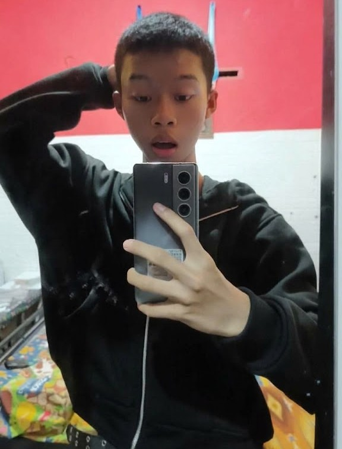

Profil Saya 🙋
|

|
| Nama |
: |
Dika Ambal Ketawang |
| Nama Panggilan |
: |
Dika |
| Tempat Lahir |
: |
Sleman |
| Tanggal Lahir |
: |
2 Juli 2010 |
| Asal Sekolah |
: |
SMK Negeri 2 Yogyakarta |
| Jurusan |
: |
SIJA |
| Hobi |
: |
Mendengarkan musik |
|
Tentang Saya
Saya adalah seseorang yang senang mencoba berbagai hal baru dan mengenal sesuatu yang belum pernah saya pelajari sebelumnya. Saat sedang santai, saya biasanya mendengarkan musik atau menikmati waktu luang. Menurut saya, setiap pengalaman bisa menjadi pelajaran yang berguna untuk ke depannya.
Saya ingin terus mengembangkan kemampuan, menambah pengetahuan,
dan menjadi versi terbaik dari diri saya. Bagi saya, proses belajar
tidak harus selalu langsung berhasil. Yang penting adalah mau mencoba,
memperbaiki kesalahan, dan terus berkembang.
|